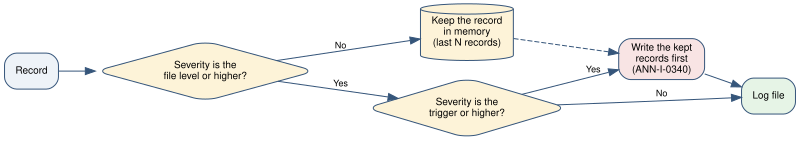

5.11. Monitor a long run¶
Purpose
To get the necessary information from a run that operates for hours, without a log that is too large to read.
Before you start
Configure the library. Refer to Configure the library. Then select the tool in Table 5.6.
Task |
Tool |
|---|---|
Get the detailed records only when a failure occurs |
Flight recorder |
Record a message in a loop without thousands of equal lines |
|
Show that a long operation continues, with the remaining time |
|
Know when an operation stopped without an error |
|
Count how many different failures occurred |
Fingerprints |
5.11.1. Keep detailed records for failures only¶
The flight recorder keeps the last detailed records in memory. Figure 5.1 shows its operation. The log file gets the detailed records only when an event of the trigger severity occurs.


Figure 5.1 Operation of the flight recorder¶
Procedure
Set the option
levelorfile_levelto the severity for a normal run, for example"INFO".Set the option
flight_recorderto the number of records to keep:from annunciator import configure configure( level="INFO", file="logs/run.jsonl", file_format="json", flight_recorder=500, flight_level="DEBUG", flight_trigger="ERROR", )
Record detailed data with
log.debugin your code, as usual.
Result
In a run without errors, the log file contains INFO and higher. When an
ERROR occurs, the file first gets the code ANN-I-0340. Then it gets
a maximum of 500 DEBUG records that came before the error. Each of
these records has the field flight_recorder.
Note
The kept records have their initial times. Thus the times in the file are not always in sequence after the flight recorder wrote its records.
Caution
If the program stops abnormally without an event of the trigger severity, the kept records are lost. An example is a loss of power.
5.11.2. Record repeated messages¶
Procedure
For a message that the user must see only one time, use
once:log.once("WARNING", "No calibration file. The default applies.")
For a message in a loop, use
everywith the number of calls between two records:for index, particle in enumerate(particles): log.every(1000, "INFO", "The classification continues.", index=index)
For a message that can occur at a high rate, use
throttlewith a time in seconds:log.throttle(30.0, "WARNING", "The buffer is almost full.", fill=fill)
Result
once records the first call. every records calls 1, 1001, 2001 and
so on, with the field occurrence. throttle records a maximum of one
message in 30 s, with the field suppressed.
At the end of the run, the library records ANN-I-0320 for each message
that has rejected records. The event gives the number of rejected records.
Note
The library identifies a message by the logger name and the message
text. If the text changes with each call, give the parameter key.
5.11.3. Record the progress of an operation¶
Procedure
If the operation is a loop, put
trackaround the items:from annunciator import track for image in track(images, "classify images", interval=30.0): classify(image)
If the operation is not a simple loop, use
Progressand callupdate:from annunciator import Progress with Progress("simulate histories", total=1_000_000, interval=60.0) as progress: while not simulation.done: progress.update(simulation.step())
Result
The log contains ANN-I-0330 a maximum of one time in each interval:
INFO [ANN-I-0330] Progress of 'classify images': 1200 of 4800 (25.0 %). Rate: 9.87 per second. Time to completion: 365 s.
At the end, the log contains ANN-I-0331 with the number of items and
the duration.
5.11.4. Find an operation that stopped¶
Use this procedure for an operation that can stop without an exception. An example is a device that does not answer.
Procedure
If you use
trackorProgress, give the parameterstall_afterwith a time in seconds:for image in track(images, "acquire images", stall_after=120.0): acquire(image)
If you do not use these tools, make a
Watchdogand callbeateach time the operation makes progress:from annunciator import Watchdog with Watchdog(120.0, "acquisition") as watchdog: while detector.is_acquiring(): read_block(detector) watchdog.beat()
Result
If the operation makes no progress for 120 s, the log contains
ANN-W-0332. The warning occurs again after each subsequent 120 s. When
the operation continues, the log contains ANN-I-0333.
Note
The watchdog only records the stall. It does not stop the operation. To
do an action, give a function in the parameter on_stall.
5.11.5. Count the different failures¶
The library gives a fingerprint to each recorded exception. Two exceptions have the same fingerprint if they have the same class and the same sequence of functions in the traceback.
Procedure
Record exceptions with
report,exceptionor a handling tool. The library then adds the fingerprint automatically.Make a summary of the log. Refer to Examine and summarise a log.
Result
The summary contains the section Distinct failures:
Distinct failures: 2
46c1ff9f2e2a 3120 x IndexError: list index out of range
7e04fdba7321 1 x ZeroDivisionError: division by zero
Thus you know that 3121 error records come from only two defects. To see the events of one failure, select the fingerprint:
annunciator view logs/run.jsonl --fingerprint 46c1ff9f2e2a